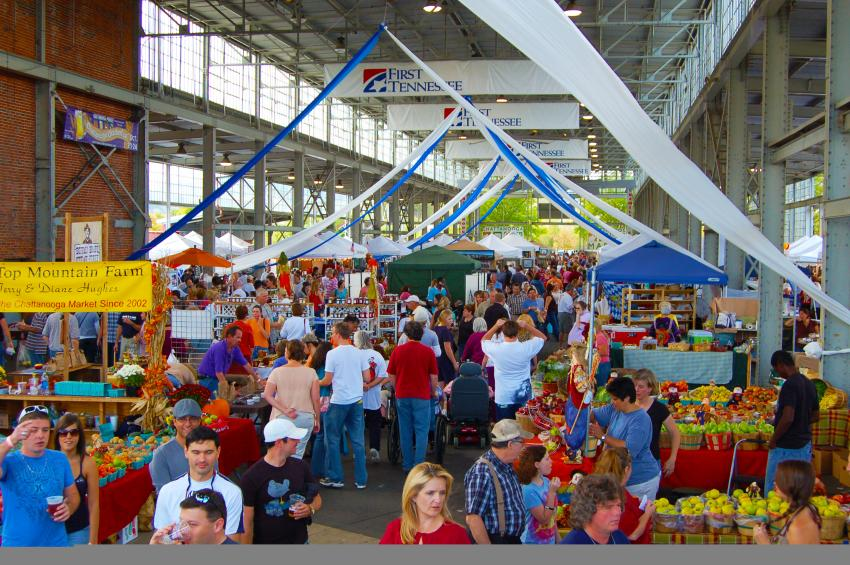
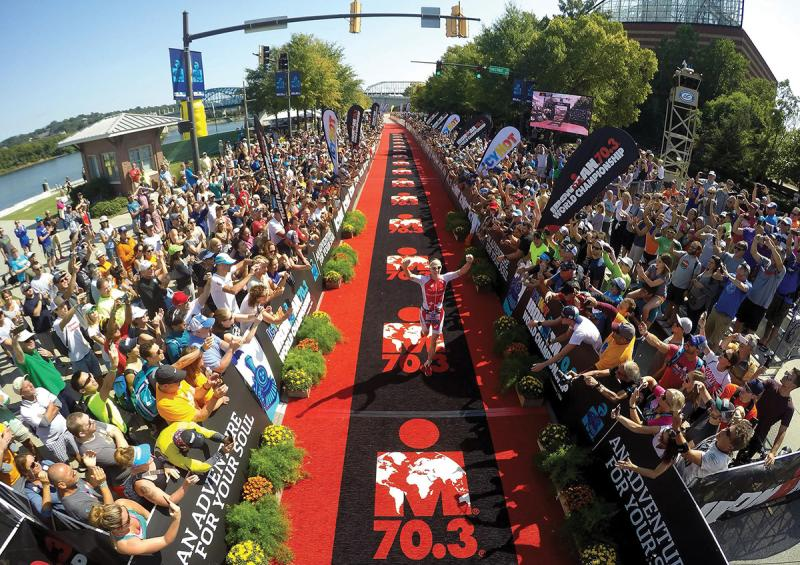
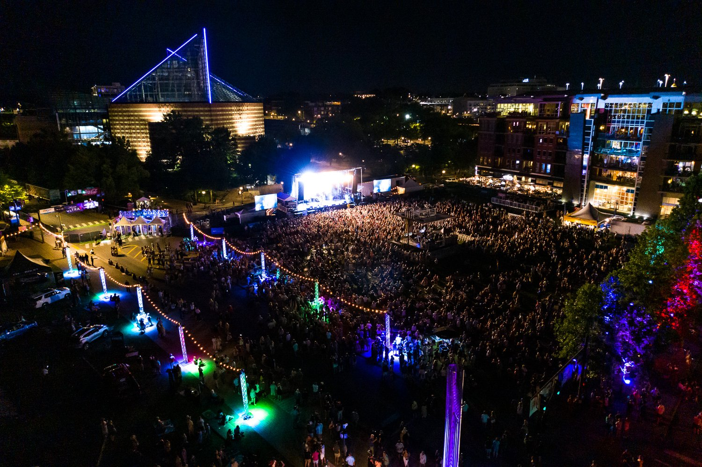

Happenings
Chattanooga hosts a variety of events year-round, celebrating everything from music festivals to food events to outdoor adventures. There's always something exciting happening in the Scenic City!
Be sure to check out some of the city’s most popular annual events, like the Riverbend Festival or the Chattanooga Market, for a great experience.
Whether you're visiting for a weekend or a week, you’ll find something fun and unique to enjoy.


